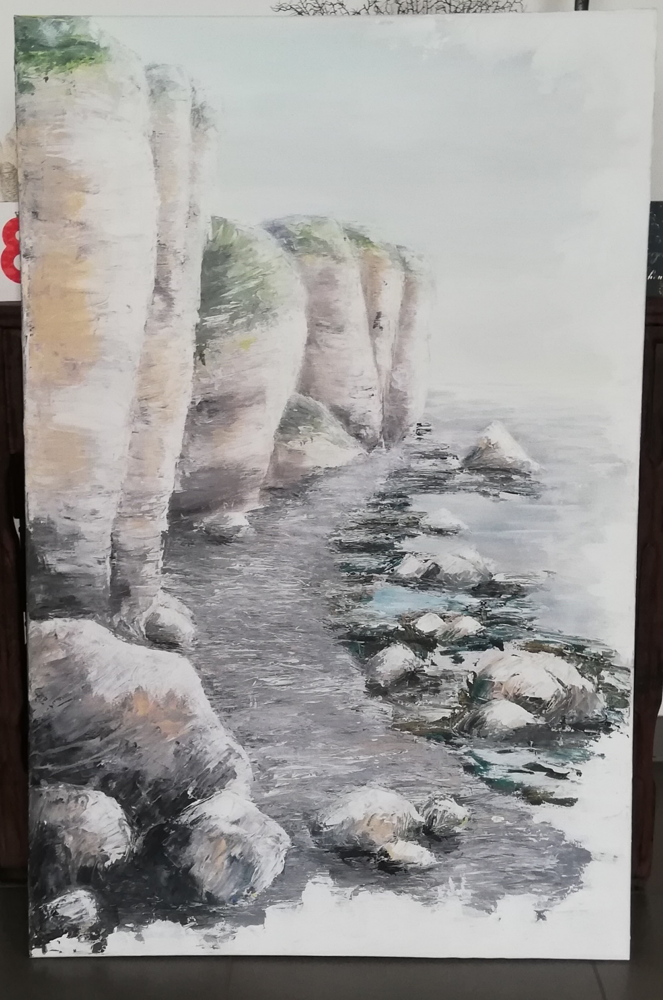
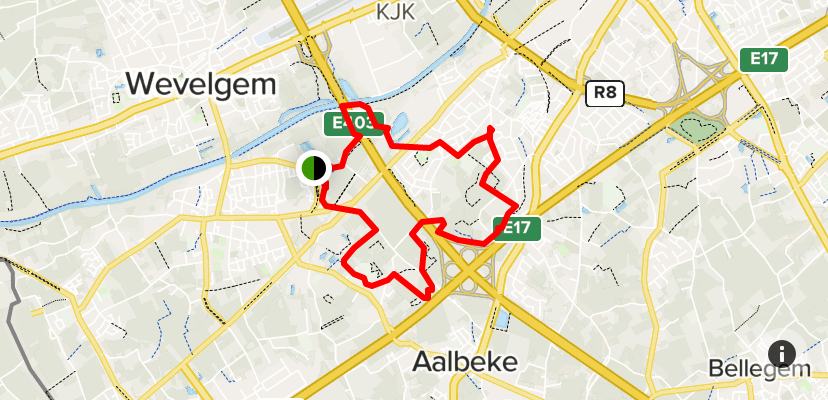

HOBBIES:
fitness
I started working out for my mental health, but have since been working out for a better body shape too.
I go to the basic fit in Marke, where most of my gym buddies go as well.

art
In high school I followed an art course, but I have been making art since I was a little kid.
Through those 6 years of high school I realised I love making art as a hobby.
Recently I started making digital art and I love it.
- My most recent painting I made for my grandma's 80th birthday

enjoying nature
I am one to often go out in nature.
I just love going to places where there is no human presence.
My dream is to one day travel the world in a skoolie before settling somewhere.
But I love the nature in my surroundings as well.
There is so much to be seen in "het Preshoekbos" where I live.

home